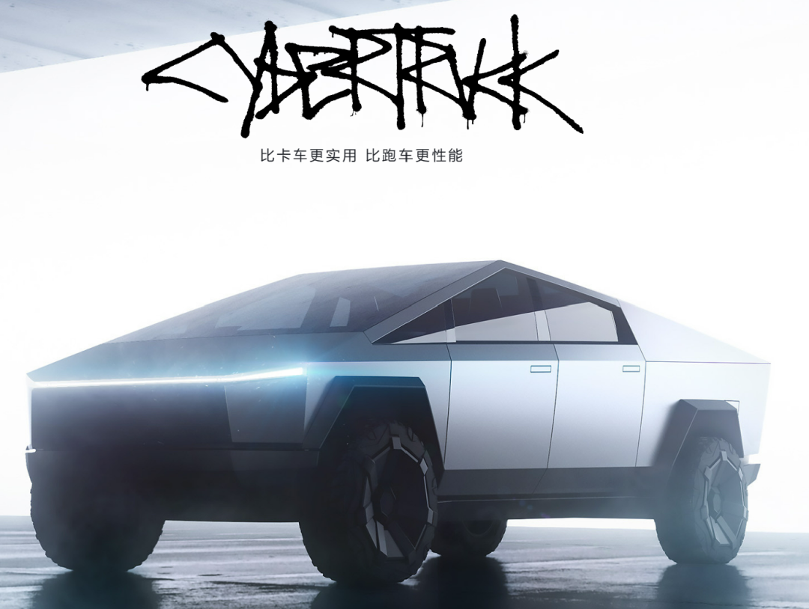
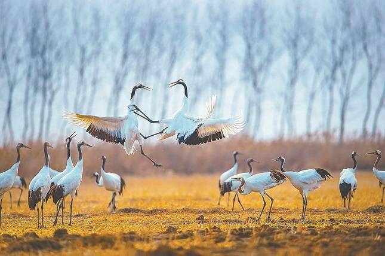

赌场开门红
V姐万事屋 V姐来了[V姐来了](http://weixin.qq.com/r/SDmHg1bExZ65KRLgb2zM)
| 微信号 | Vjielaile |
| 功能介绍 | 一起来把想要的生活收入囊中。 |
2023-01-31 00:16
原文链接(长) 原文链接(短)
Hi, 我是V姐。
掐指一算，上次更新还是2周前。。。
今天赌场都开门了，我怎么也得来上工。
坦白说，这次从12月下旬陆续阳开始，我就处于半摸鱼状态，平均每天正经工作时间也就2小时吧，其他时间看看书喝喝茶，跟朋友聊聊天。
一摸就从虎年摸到兔年，我回忆了下，这大概是我从上大学以来，连续最长时间的休息。
上次这么放任自己无所事事，还是高考结束那个暑假。
休息这么久，我发现工作状态并没有满血复活，基本就是越休越懒，瞌睡犯困，什么都不想干，还注意力涣散。
这不是脑雾，这是 **KPI消失综合症。**
就我个人而言，还是要有点目标感。好机会好点子大多是在做事的时候涌现的，那种休息放空1,2年，灵光闪现，突然发现了自己该走什么样的路，这种事大多出现在传奇里，可遇不可求。
**关于市场**
今天的市场北上买了188亿，内资卖了66亿，最后高开低走。
大家看春节消费，以为能涨的电影旅游机酒纷纷下跌。
赌场刚开门，你打算进货呢，内资已经打算把前面的涨幅落袋为安了。
实不相瞒，我春节看满江红的时候，里面一个个反转再反转，算盘打得啪啪响，我脑海里涌现的就是这帮内资基金经理。
人穷就大气不起来，他们手上也没钱，仓位那么高，不卖没钱换板块加仓。还得看公募的新发量能不能起来，增量钱能不能跑步进场。
受特斯拉反弹的利好，新能源上游产业链又行了。
特斯拉最低的时候15倍PE肯定是便宜的，我有关注它上游供应商，有家公司叫力劲。
特斯拉要量产Cybertruck，一款炫酷的皮卡车：

然后它跟力劲采购大量的压铸机，1月力劲的股价上涨了50%。
新能源整车的增速已经没有那么快了，挖增量还是要到上游产业链去挖。
很多朋友问券商，券商前面1个月涨了不少，一般来说，如果真有牛市，券商会有2波行情，开始一波，中间回调一下，牛市中后期还有一波。所以如果短期券商还能创新高，可以考虑卖出一部分再捡回来。
中概互联今年的政策基本面良好，货币预期也宽松，我个人认为还在稳步上行的通道里，资金没有太大理由砸盘。
整体我看好1季度行情，现在还没上车的朋友，不要急，近期应该会有一些回调，1月有好几个跳空的缺口没有补上。从历史上看，情况最差的时候，股市会率先反弹，预期明朗之后就会有调整，比如20年春节后反弹20天，接着就盘整下跌了。
22年12月23日发热门诊达峰，股市基本同步开始上涨，现在也差不多涨了1个月了。
2月会有上车机会的，耐心一点点哈。
* * *
这次过年我回老家盐城，3年没回去，发现变化非常大。
高架建得四通八达，五星级酒店遍地开花，新的景区和商圈纷纷拔地而起。3年疫情，城市面貌大变样，看上去投资和基建确实拉得不少。我特地查了下，22年GDP增速4.6%，人均GDP达到10万元。
我这次回去住了一个新开的酒店，春节期间满房，地库停满了沪牌的车子，吃早餐周围都是上海话，让我恍惚间不知道自己在哪里。
为家乡高兴，也欢迎大家有空到盐城玩，风景优美，空气质量绝佳。

春节期间还有一个好玩的事情，我舅舅吃饭时问我，你今年30多了吧？现在上班了嘛？
我说是的，本命年36，现在没上班呢。
我舅舅叹了口气，第二天非让我哥带我去庙里求了一个手串，我咚咚咚磕几个头，参加了一场迷信小活动，高兴地把手串带上，感谢亲人的祝福和美意。
年纪大了，并不想解释太多，更加不会怼天怼地地应激，更多是去感受别人的发心。
发心是好的，就欣然接受。
祝福大家，兔年大吉